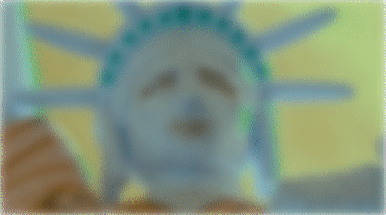

Title sequences
Recreating title sequences from TV Shows and Movies.
Ozark
Ozark is an American crime drama streaming television series created by Bill Dubuque and Mark Williams for Netflix. The series follows Marty and Wendy Byrde, a married couple who move their family to the Lake of the Ozarks to create a big money laundering operation for a Mexican drug cartel.
This particular instance is based on Season 1, Episode 1.
I used the Greensock (GSAP) library for the animation.

View the demo.
Better Call Saul
Better Call Saul is an American crime drama television series. It is a spin-off, prequel, and a sequel to Breaking Bad. Set primarily in the early to middle part of the 2000s in Albuquerque, New Mexico, the series follows Jimmy McGill (Bob Odenkirk), an earnest lawyer and former con artist, as he becomes an egocentric criminal defense attorney known as Saul Goodman.
I used the Greensock (GSAP) library for the animation.
View the demo.
Schitts Creek
Schitt's Creek is a Canadian sitcom television series created by Dan Levy and Eugene Levy, that aired from 2015 to 2020. The series follows the formerly wealthy Rose family's trials and tribulations.
I took the final sequence in the opening title. You can view the title sequence on youtube.
I used the Greensock (GSAP) library for the animation. The CSSRulePlugin is required to animate the pseudo-elements.

View the demo.
Orange Is The New Black
Orange Is the New Black is an American comedy-drama television series created by Jenji Kohan for Netflix. The series is based on Piper Kerman's memoir Orange Is the New Black: My Year in a Women's Prison (2010), about her experiences at FCI Danbury, a minimum-security federal prison.
I took the final sequence in the opening title. You can watch opening title on youtube.
The animation is a CSS animation, but uses JavaScript to toggle a class to trigger the animation.
 .
.
View the demo.
Killing Eve
Killing Eve is a British spy thriller television series, produced in the United Kingdom for BBC America and BBC Three. The series follows Eve Polastri (Sandra Oh), a British intelligence investigator tasked with capturing psychopathic assassin Villanelle (Jodie Comer).
I used the Greensock (GSAP) library for the animation.

View the demo.
The Marvelous Mrs. Maisel
The Marvelous Mrs. Maisel is an American period comedy-drama television series. It is set in the late 1950s and early 1960s, it stars Rachel Brosnahan as Miriam "Midge" Maisel, a New York housewife who discovers she has a knack for stand-up comedy and pursues a career in it.
This is a pure CSS animation of the title from Episode 2 of Season 4.

View the demo.